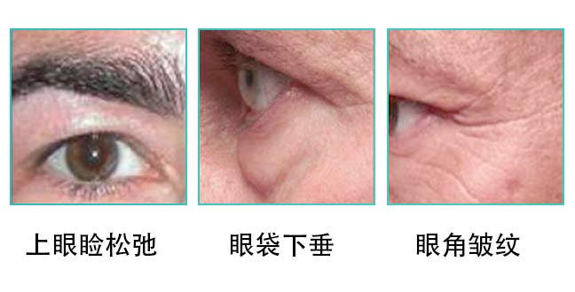

知道吗？男性肌肤与女性是大大不同的哦，一起来学习一下吧！
区别1：油脂分泌旺盛
由于雄性激素分泌比较旺盛，所以男士的皮肤出油多，伴随着出油量大，大量的皮脂会吸附在老废角质上无法正常的脱落，同时会吸附空气中的灰尘，进一步导致毛孔堵塞、变大，容易形成黑头和粉刺。
区别2：角质较厚
大概比女士厚40%左右，角质层如果太厚易出现皮肤粗糙，暗沉的问题。同时化妆品也不易吸收。
区别3：外油内干
由于男士肌肤外面油，往往遮蔽了很多潜在的皮肤问题。很多男士觉得只要肌肤紧绷就可以了。但实际上，随着年龄的增加，皮肤的保湿因子日渐流失，会出现外油内干的缺水问题，另外由于男士更容易出汗，毛孔粗大，皮肤的水分蒸发远远比女士多。季节、空调、日晒、压力更会加剧皮肤干燥。也正是因为油，男士的皮肤不易出现如同女士面部出现的那种细碎的干纹，造成隐形老化！当量变积累到一定程度，就会直接出现难以抚平的深层皱纹！
区别4：眼部肌肤特点
男性的老化痕迹首当其冲会率先出现在眼部，因：为眼部肌肤没有皮脂腺和汗腺，缺水状况更加严重，加上男性生活压力较大，不规律的生活、用眼过度，偶尔的烟酒刺激更容易让老化加剧。男性眼部问题主要有：上眼睑松弛、眼袋下垂、眼角皱纹
